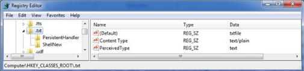

Choose the user's favourite file type, replace the program which handles the opening with a similar one described in the previous section, and voila!
What happens when you click on a .TXT file? The operating system checks the HKEY_CLASSES_ROOT hive for the associated extension to see what program it should launch. Here we see the associate for .TXT files mapped to “txtfile”.

Further down in the HKEY_CLASSES_ROOT hive we find the entry for “txtfile” where the applications that are used to “open” and “print” are defined. Here you can see that NOTEPAD.EXE is the application that will launch when the OS tries to OPEN a txt file.

What if the attacker or his malware changes this association? Instead of launching notepad it tells the OS to launch NOTPAD.EXE. NOTPAD.EXE is wrapper around the real NOTEPAD.EXE but it also contains a malicious payload. During the initial infection the attacker makes this change and leaves his NOTPAD.EXE behind. You remove the initial attack vector and do memory forensics to find nothing running on the host. Sometime later, after memory of the incident fades the administrator checks his logs by clicking on a .TXT file. It launches NOTPAD.EXE which in turn launches NOTEPAD.EXE and reinfects the machine.
In an alternate version of this attack a new file extension is created such as .WTD. When the attacker is ready to reinfect you they send in email with a .WTD extension. When it is opened on the victim’s machine they are reinfected.
I am sure some of you will say, “but NOTPAD.EXE will be detected by AV”. Perhaps, but remember the point of these is to evade memory forensics. For the most part, evading antivirus software is trivial.'
Detection:
How do you detect this? Well, baseline the contents of your HKEY_CLASSES_ROOT registry key and then periodically check its current state against that baseline. Investigate any changes to see what executes when you click on the file extensions that have changed. We all know it is dangerous to click links on the internet. Unfortunately links on your computer aren’t any safer once an attacker has had a chance to change where they go.